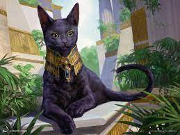
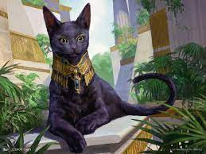

Boros Bully
AGGRO
Boros Bully has one real path to victory and that is heading into the Red Zone. It wants to use its air force, composed of Squadron Hawk and Battle Screech, backed up with a board-wide power buff in Rally the Peasants to win over one or two attacks. Recursive spells Strands, Screech, and Faithless Looting as well as recursive creatures in Sacred Cat and Lunarch Veteran, plus lifegain, give the deck some grinding power too!
Deck-List


Dimir Delver
CONTROL
Dimir Delver is a control shell, which plays just 8 main threats in a full playset of both Gurmag Angler and Tolarian Terror (big 5/5 creatures that can use the graveyard to reduce their casting cost from 7 to as low as 1!). Backed up with the classic Delver of Secrets, the rest of the deck is classic draw, kill and counter spells, as well as some self-mill cantrips in Thought Scour to feed the big threats!